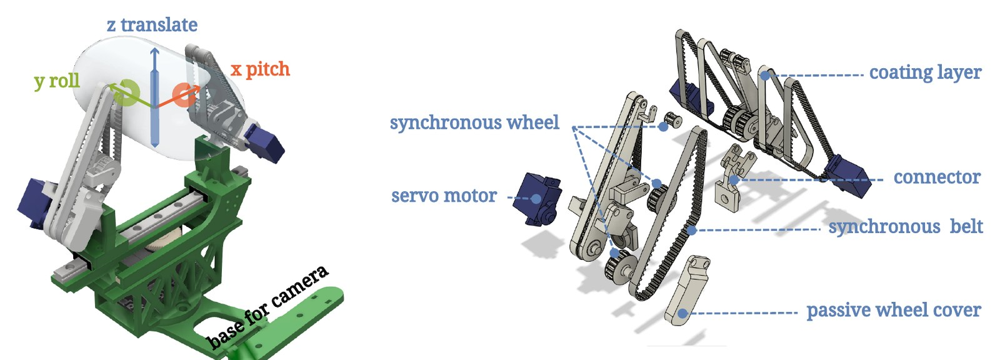
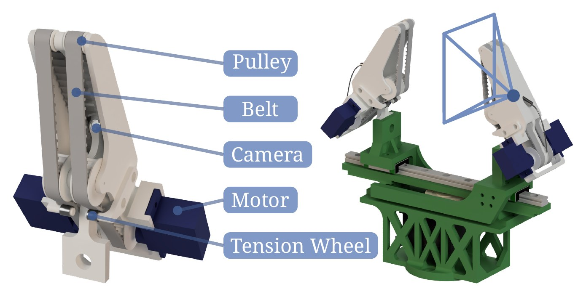

Overview
Parallel-jaw grippers are the default end-effector in robotics because they are simple, robust and cheap, but once an object is grasped they cannot move it, so every reorientation has to come from the arm. The Belt-Finger series replaces the jaws with soft, actively driven double-belt fingers. The gripper still opens and closes like a normal parallel gripper, while the belts translate, roll and pitch the object inside the hand.
Belt-Finger introduces the low-cost, 3D-printable hardware and shows that it can be driven by teleoperation, model predictive control and fine-tuned vision-language-action policies. Belt-Finger-Touch adds the sense of touch: a camera inside the finger estimates contact force on the moving, deforming belt, enabling force-controlled handling of fragile objects and tactile human–robot interaction.

Belt-Finger
CoRL 2026A double soft-belt finger module that turns a parallel gripper into a dexterous one, with in-hand translation, roll and pitch.
Videos & links ↓
Belt-Finger-Touch
Under reviewA camera inside the finger reads contact force on the rotating belts (0.29 N MAE at 30 Hz) for damage-free handling of fragile fruit.
Videos & links ↓We present a parallel-gripper upgrade: a double-soft-belt finger module that keeps standard opening and closing while adding three in-hand degrees of freedom: translation, pitch and roll. The fingers are 3D-printed from PLA and TPU and use off-the-shelf servos, keeping the mechanism simple, cheap and easy to integrate. To use the extra DoFs we build two control pipelines: an iCEM-based model predictive controller for in-hand manipulation of known objects, and a lightweight teleoperation interface that controls the arm and gripper together (10 DoF) with minimal hardware. Across challenging tasks executed by teleoperation, MPC and fine-tuned VLA policies, Belt-Finger consistently improves dexterity and task feasibility over a conventional parallel gripper.
Paper video
3:56A walk-through of the whole paper: finger design, comparison with related grippers, teleoperated card insertion and table cleaning, in-hand motion benchmarks, Belt-Finger vs. a parallel gripper, and MPC.
Hardware and teleoperation
2:30Structure of the gripper, followed by two teleoperated tasks. In card insertion, a bank card is picked from the table and pushed into a vertical and a 15° sloped slot, with fine finger pitch doing the alignment. In table cleaning, LEGO bricks are flipped and pens, tweezers and chess pieces are reoriented in hand instead of with large arm motions. Sec. 3, 5, 6.3 · Fig. 8–9
Belt-Finger vs. parallel gripper
0:51The same teleoperated daily tasks with Belt-Finger (top) and a conventional parallel gripper (bottom). Belt-Finger solves all ten benchmark tasks and the parallel gripper fails five of them. In-hand pitch, roll and translation replace multi-step regrasps, re-centre thin or soft objects between the belts, and even screw on a lid. Sec. 6.5 · App. E · Fig. 12
VLA policies on Belt-Finger
0:40Autonomous rollouts of π0.5, GR00T N1.7 and ACT, fine-tuned on 750 teleoperated demonstrations (150 per task) with a 10-D action space that includes the three belt motions. The policies use the active belts for closed-loop corrections during in-hand manipulation. Sec. 6.4 · Fig. 10 · Table 4
| Task | ACT | π0.5 | GR00T N1.7 |
|---|---|---|---|
| Badminton in cup | 60% | 80% | 70% |
| LEGO reorientation | 80% | 95% | 100% |
| Pick & insert tea bag | 0% | 85% | 85% |
| Serve comb | 60% | 70% | 60% |
| Recover knight | 0% | 60% | 75% |
Success rate over 20 rollouts per task.
Belt- and roller-driven fingers can translate, roll and pitch an object in hand, but their contact surface keeps moving and bending. Electrode-based strain sensing and conventional gel-based visual-tactile sensors do not work on it, so such grippers usually run open-loop. Belt-Finger-Touch upgrades Belt-Finger with a single embedded camera that observes both belts from inside the finger. A lightweight network predicts each belt's segmentation and an effective indentation (magnitude, location and angle) from the image, and a quasi-linear viscoelastic (QLV) model fitted on 15 h of test-bench data converts it into a dynamic contact force. A belt-specific camera calibration lets the model transfer to newly built fingers. The pipeline runs in real time and enables damage-free in-hand reorientation of fragile fruit and sensitive tactile guidance of a robot arm.
Mechanical design
0:15Exploded view of the finger. Side walls replace the centre bone of Belt-Finger and form a chamber for the embedded camera, which sees both belts and the grasped object through the gap. Two independently driven servos actuate the upper and lower TPU belts, and tensioner pulleys preload the belts so their force response repeats across rolling cycles. Sec. III-A · Fig. 1
Force sensing across surfaces and backgrounds
1:12A handheld stress test outside the test bench. The finger is pressed against objects of different colour, texture and compliance in front of changing backgrounds, and the estimated contact-force vector is rendered on the belt in real time. Domain randomisation during training (random textures, noise, colour jitter) keeps the estimate stable. Sec. IV-A, IV-B · Fig. 7
In-hand reorientation of fragile fruit
0:16A strawberry, raspberry, plum and blueberry are rolled in hand by counter-rotating belts while a PD controller adjusts the gripper opening to hold a target contact force. The belt wraps around the fruit and spreads the load, so a grasp firm enough to rotate a plum does not bruise a raspberry. Sec. IV-D · Fig. 10
Pick – reorient – place benchmark
1:18Strawberries, raspberries and cherry tomatoes are grasped in an arbitrary orientation, rotated in hand to tip-down and inserted into a holder. The lower panel plots the measured force on the upper and lower belt. A rigid parallel gripper also cannot reach the target orientation within the arm's motion limits. Sec. IV-D · Fig. 12 · Table II
| Gripper & sensing | Strawberry | Raspberry | Cherry tomato |
|---|---|---|---|
| Belt-Finger-Touch + force sensing | 19/20 | 20/20 | 20/20 |
| Belt-Finger-Touch + motor-current limit | 13/20 | 0/5 | 20/20 |
| Parallel finger + motor-current limit | 7/20 | 0/5 | 17/20 |
Success without visible damage. Trials stop after 5 consecutive crushed fruits to avoid food waste.
Tactile guidance in four directions
0:08Force magnitude and contact location on each belt give four independent commands to a Cartesian velocity controller: translation along y and z, and rotation about y and z. The operator pushes through a guide bar held by the gripper, mimicking a loaded scenario. Sec. IV-E · Fig. 13
Single-finger guidance along a circle
0:31The operator guides the arm along a circle shown on screen by pressing a single active Belt-Finger-Touch with one finger. The traced path (blue) follows the reference (black) with a mean absolute error of 5.6 % of the radius, so the force estimate is smooth enough for continuous manual guidance and not only for contact detection. Sec. IV-E · Fig. 14